문제: NovaRetail의 사내 IT 지원
영상은 FDE(Forward Deployed Engineer)가 고객사에서 받는 문제 정의서 한 장으로 시작해요. 고객은 가상의 소매 회사 NovaRetail이고, 직원은 3,000명, 맡은 일은 사내 IT(Information Technology) 지원이에요.
문서 맨 위 1번 항목이 문제예요. VPN(Virtual Private Network) 안내, 비밀번호 규칙, MFA(Multi-Factor Authentication) 정책, 소프트웨어 설치 규칙, 노트북 문제 해결 가이드, 서비스 데스크 런북까지 문서는 이미 다 있어요. 그런데 직원들은 어느 문서에 답이 있는지 몰라서 같은 티켓을 계속 올려요. 아래쪽 주황 상자가 이 프로젝트가 풀어야 할 한 문장이에요. 답은 빨라야 하지만, 회사는 그 답이 사내 지식에 근거하고 믿을 수 있고 투명하길 원해요.
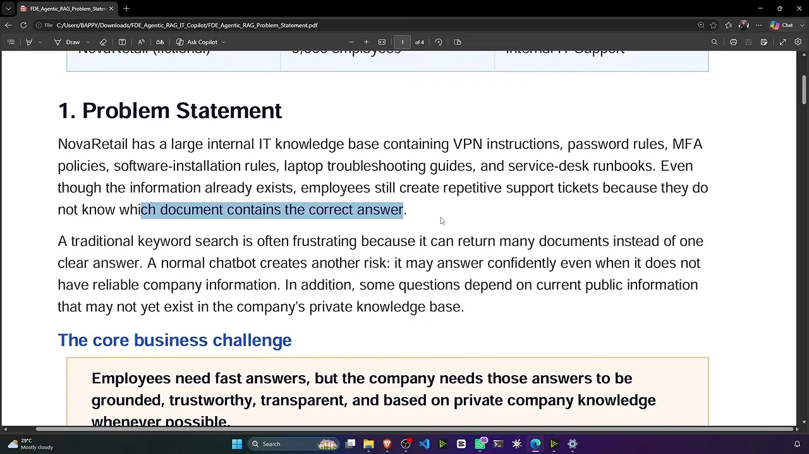
발표자는 지금 이 일을 사람이 손으로 한다고 가정해요. 상담 담당자가 질문을 받으면 회사 문서를 뒤져서 근거와 함께 답을 찾아야 해요. 지어낸 답은 안 되고, 회사 정책 문서를 따라야 하니 시간이 오래 걸려요.
그냥 RAG를 쓰면 안 되나요?
많은 사람이 떠올리는 해법은 RAG예요. 문서 2번 표가 그게 왜 부족한지 세 줄로 정리해요. 왼쪽이 단순 RAG가 하는 일, 오른쪽이 현실에서 생기는 문제예요.
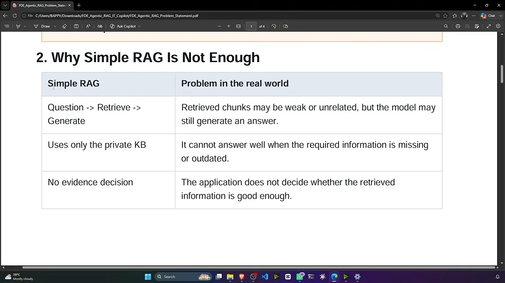
- 질문 → 검색 → 생성만 해요. 엉뚱한 조각이 와도 모델은 답을 만들어요.
- 사내 KB만 써요. 필요한 정보가 없거나 낡았으면 제대로 답하지 못해요.
- 근거 판단이 없어요. 검색 결과가 쓸 만한지 앱이 결정하지 않아요.
제안하는 해법: 에이전틱 RAG 코파일럿
문서 3번이 해법이에요. 이름은 Enterprise IT Support Agentic RAG Copilot이에요. 표의 1~8단계를 위에서 아래로 읽으면 흐름이 그대로 보여요. 5A와 5B에서 길이 갈라지는 게 보통 RAG와 다른 점이에요.
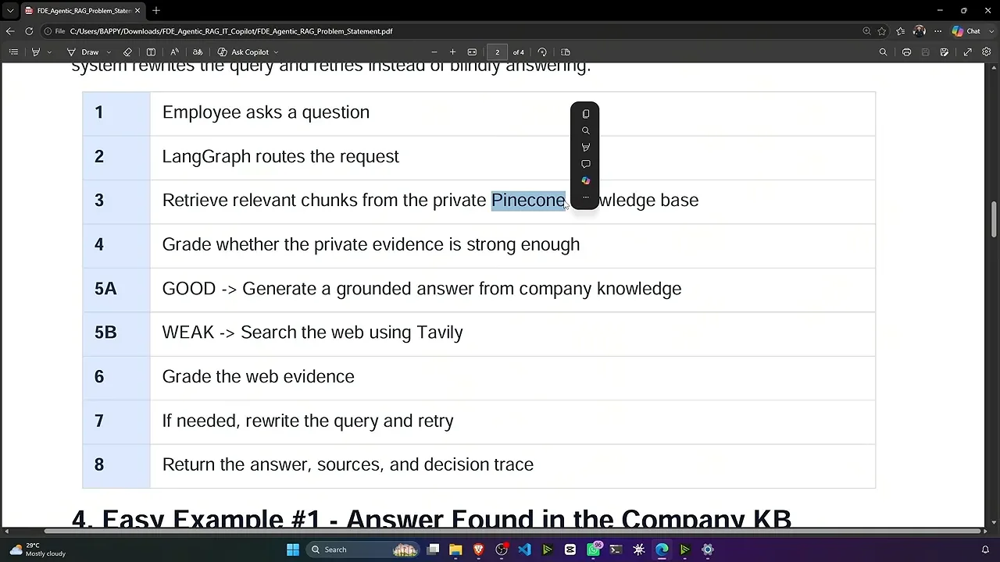
발표자는 7단계를 "루프"라고 불러요. 웹 결과까지 약하면 질문을 검색하기 좋은 문장으로 고쳐 다시 시도해요. 그래도 무한히 돌지 않도록 반드시 멈추는 조건을 둔다고 강조해요.
이어서 문서에는 쉬운 예가 두 개 있어요. 위쪽 예 1은 "집에서 회사 VPN에 어떻게 접속하나요?"예요. VPN 절차가 이미 사내 핸드북에 있으니 Pinecone에서 찾고, 근거로 판정한 뒤 바로 답해요. 공개 웹을 찾을 이유가 없어요. 아래쪽 예 2는 "최신 Microsoft Teams 장애 안내는?"이에요. 사내 문서에는 지금 장애 정보가 없으니, 판정이 부족하다고 보고 LangGraph가 Tavily 웹 검색으로 넘겨요.
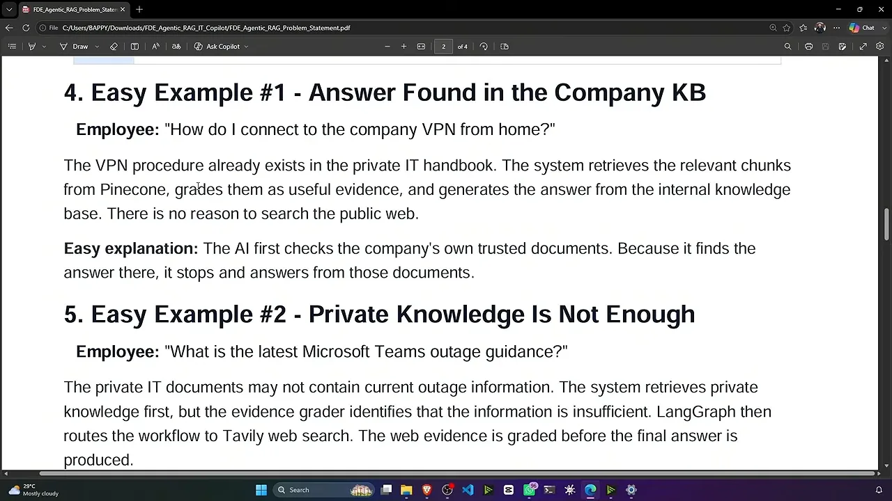
무엇으로 만들고 무엇을 얻나요
문서 6번 표는 보통 RAG와 이 프로젝트의 에이전틱 RAG를 네 가지 기준으로 나란히 놓아요. 보통 RAG는 질문 → 검색 → 생성의 고정된 길을 따라가고, 이 프로젝트는 실행 중에 스스로 길을 고른다는 게 요지예요.
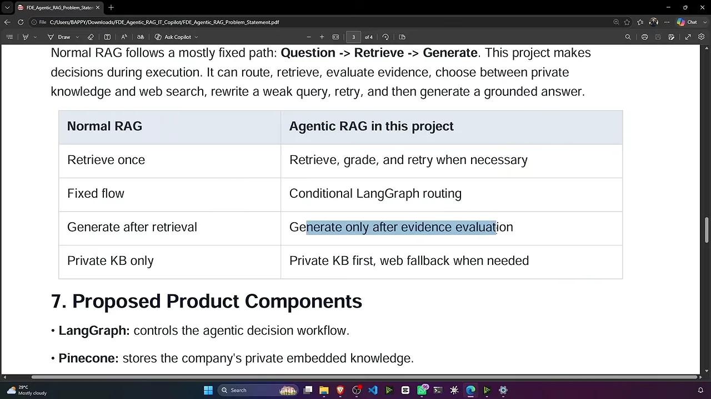
쓰는 기술
7번 목록이 제품 구성 요소예요. 슬라이드에는 HuggingFace 임베딩과 Groq LLM이 적혀 있는데, 발표자는 바로 그 줄을 짚으며 실제 구현에서는 OpenAI의 LLM과 임베딩 모델을 쓰겠다고 말해요. 슬라이드는 "어떤 제공자든 된다"는 예시이고, 데모는 OpenAI로 만든다는 뜻이에요. 다만 바로 다음 노트북 실습은 슬라이드처럼 HuggingFace와 Groq로 돌려요.
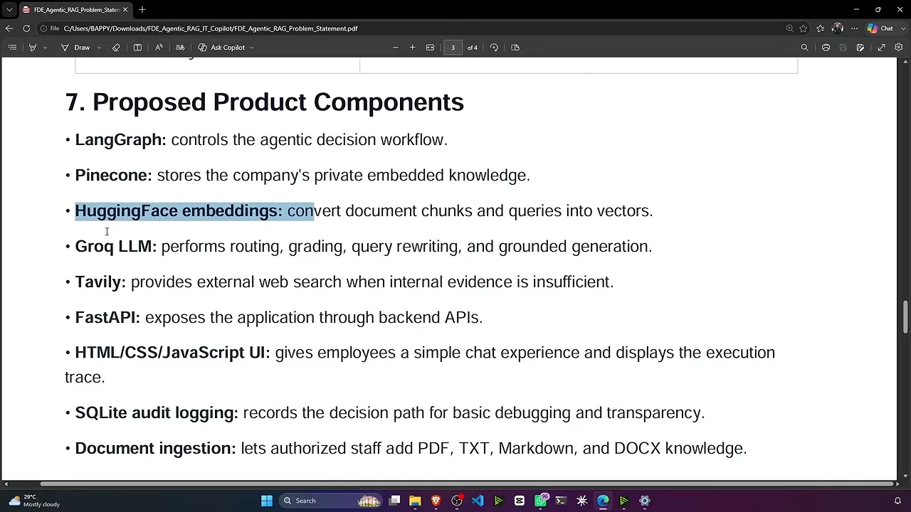
| 구성 요소 | 맡는 일 | 영상에서 덧붙인 말 |
|---|---|---|
| LangGraph | 에이전트의 결정 흐름 제어 | 요즘 회사들이 많이 쓰는 에이전트 오케스트레이션 프레임워크 |
| Pinecone | 사내 지식 임베딩 저장 | 클라우드에서 돌아가는 운영용 벡터 DB(Database) |
| OpenAI | 라우팅·판정·질문 재작성·답 생성, 임베딩 | Groq나 Gemini 같은 다른 제공자로 바꿔도 돼요 |
| Tavily | 사내 근거가 부족할 때 웹 검색 | SerpAPI도 있지만 Tavily가 업계 표준에 가깝다고 봐요 |
| FastAPI | 백엔드 API(Application Programming Interface) | 운영 환경에서 쓰는 API 프레임워크 |
| HTML(HyperText Markup Language)·CSS(Cascading Style Sheets)·JS(JavaScript) | 채팅 화면과 실행 경로 표시 | 단순한 화면이면 충분해요 |
| SQLite | 감사 로그: 결정 경로 저장 | 설치가 쉬워서 고른 것이고 PostgreSQL·MongoDB도 돼요 |
| 문서 수집 | PDF(Portable Document Format)·TXT(Plain Text)·Markdown·DOCX(Office Open XML Word Document) 추가 | 관리자가 새 문서를 올려 지식 베이스를 키워요 |
데이터는 회사 컴퓨터에 있는 파일이라고 가정해요. 실제로는 DB에 있을 수도 있지만 연결만 바꾸면 된다고 해요. 배포는 DigitalOcean에 하고, GitHub에 커밋하면 자동으로 다시 배포되는 CI(Continuous Integration)/CD를 붙이겠다고 예고해요.
기대 효과와 FDE의 관점
8번 목록은 이 제품이 회사에 주는 가치예요. 위에서부터 반복 티켓 감소, 빠른 답, 공개 정보보다 사내 지식 우선, 근거 판정으로 근거 없는 답과 환각 감소, 통제된 웹 대체로 지식 공백 처리, 출처와 실행 경로로 AI 결정 검토, 승인된 직원이 문서를 더해 지식 베이스 키우기예요.
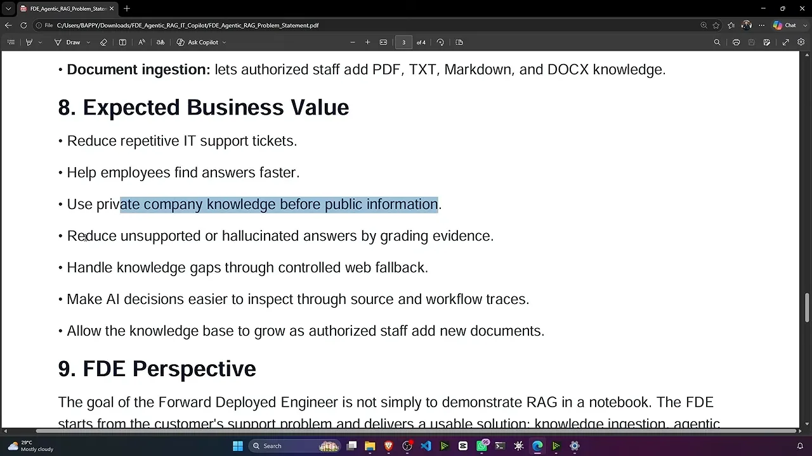
9번은 FDE의 일을 이렇게 정의해요. 노트북에서 RAG를 시연하는 데서 끝나지 않고, 고객의 지원 문제에서 출발해 지식 수집, 에이전트 워크플로, API, 화면, 감사 기능, 테스트, 패키징, 배포 경로까지 쓸 수 있는 해법으로 내놓는 거예요. 발표자는 회사에서도 이런 문제 정의서를 받으니, 이걸 참고 삼아 자기 설계를 해 보라고 권해요.
에이전틱 RAG는 어떻게 움직이나요
구현에 들어가기 전에 발표자는 기본 RAG부터 다시 짚어요. 슬라이드의 네 칸이 기본 RAG 전부예요. 사용자 질문으로 벡터 검색을 하고, 관련 조각을 받아 LLM에 문맥으로 넣어 답을 만들어요.
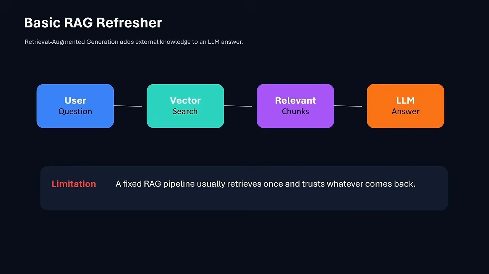
다음 슬라이드는 그 한계를 네 칸으로 나눠요. 왼쪽 위 Missing knowledge는 답이 색인에 아예 없는 경우예요. 오른쪽 위 Outdated knowledge는 사내 문서가 낡은 경우인데, 발표자는 연 25일이던 휴가가 30일로 바뀐 예를 들어요. 왼쪽 아래 Weak retrieval은 의미는 가깝지만 답은 들어 있지 않은 조각이 올라오는 경우예요. 오른쪽 아래 No recovery는 실패했을 때 대안이 없는 경우예요.
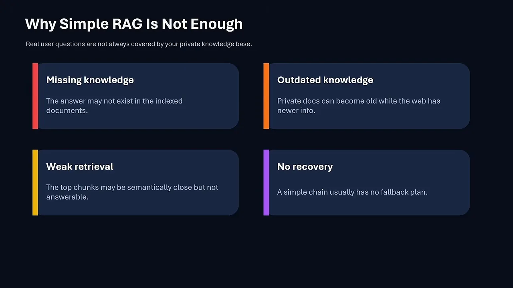
업계식 에이전틱 RAG의 원칙
슬라이드의 네 블록은 Private KB, Agent Decisions, Web Search, Grounded Answer예요. 가운데 보라색 블록에 적힌 다섯 동사(route, grade, rewrite, fallback, stop)가 에이전트가 내리는 결정이에요. 발표자는 "hello, how are you" 같은 인사는 지식 베이스도 웹도 필요 없으니 LLM이 바로 답하면 된다고 덧붙여요.
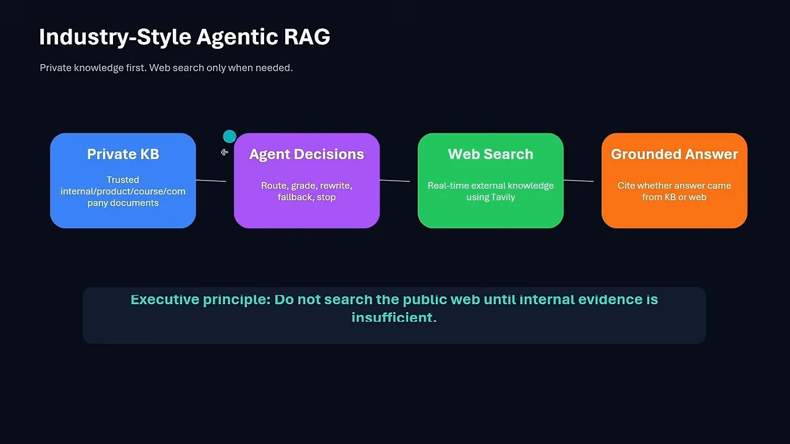
재검색 루프에는 반드시 멈추는 조건이 있어야 한다고 해요. 질문이 검색하기에 모호하면 인터넷에서도 엉뚱한 문서가 오니 질문을 고쳐 다시 찾는데, 이게 무한 루프가 되면 안 되니 최대 재시도 횟수를 둬요.
전체 아키텍처
이 영상 전체가 구현하는 그림이에요. 번호를 따라 읽으면 돼요. ① 사용자가 묻고 ② 라우터(LLM)가 KB(RAG)로 갈지 Direct로 갈지 정해요. KB로 가면 ③ Pinecone에서 상위 K개를 찾고 ④ LLM이 KB 근거를 good/weak로 판정해요. 이렇게 LLM 판정을 판단 장치로 쓰는 게 핵심이에요. good이면 ⑦ KB로 답을 만들고, weak이면 ⑤ Tavily로 웹을 찾아 ⑥ 다시 판정해요. 웹 근거가 good이면 ⑧ 웹으로 답하고, weak이면 ⑨ Fallback Answer로 가요. 맨 아래 왼쪽 상자는 지식 베이스를 만드는 과정(문서 → 조각 나누기 → 임베딩 → Pinecone)이에요.
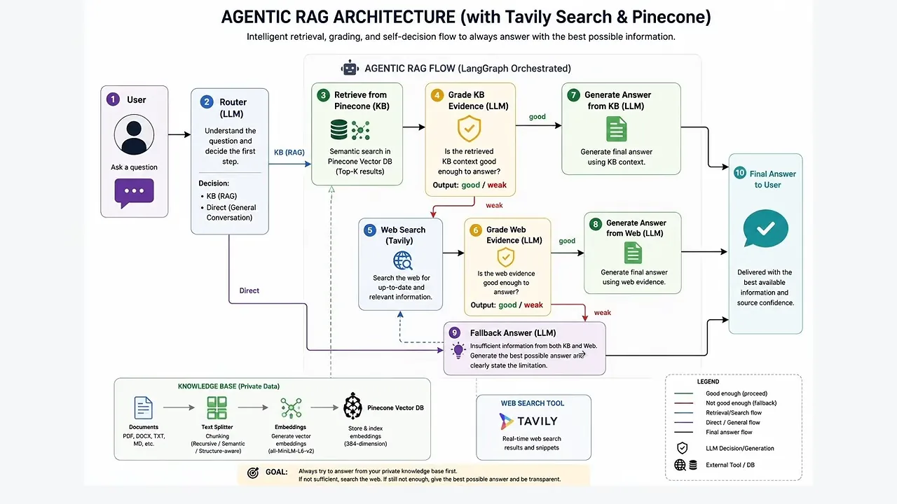
발표자는 ⑨번 노드를 두 가지로 설명해요. 웹 근거가 약하면 먼저 질문을 재작성해 다시 검색하고, 서너 번 시도해도 좋은 근거가 없으면 "가장 좋은 답을 찾지 못했다"고 사용자에게 알려요. 재작성 예로는 "lang nodes builder"처럼 짧은 질문을 "LangGraph 노드를 만드는 단계를 알려 줘"처럼 검색하기 좋은 문장으로 바꾸는 걸 들어요.
여섯 노드의 역할은 다음 슬라이드에 카드로 정리돼 있어요. Router는 질문에 검색이 필요한지 가르고, KB Search는 색인된 사내 문서를 벡터 검색하고, KB Grader는 그 조각으로 답할 수 있는지 봐요. Web Search는 KB가 부족할 때만 Tavily를 쓰고, Web Grader는 웹 근거가 쓸 만한지 보고, Generator는 근거 있는 답과 출처 종류를 만들어요.
KB에 답이 있는 예(에이전틱 RAG에서 문서 판정은 어떻게 하나요?)는 더 빠르고 안전하고 싸다고 해요. KB에 답이 없는 예는 다음 슬라이드처럼 흘러가요. 최신 Tavily LangChain 패키지를 묻는 질문은 KB Search → KB Grade: Weak → Tavily Search → 웹 출처로 답 생성 순서로 가요.
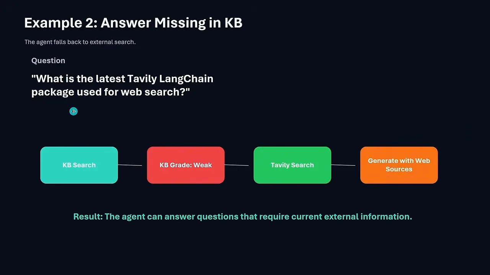
안전 규칙과 상태 설계
안전 규칙은 네 줄이에요. KB가 충분하면 KB만으로 답해요. KB가 약하면 Tavily 웹 결과를 써요. 웹도 약하면 한 번 재작성하거나 근거가 부족하다고 말해요. 그리고 항상 답이 KB, 웹, 둘 다 중 어디서 왔는지 밝혀요.
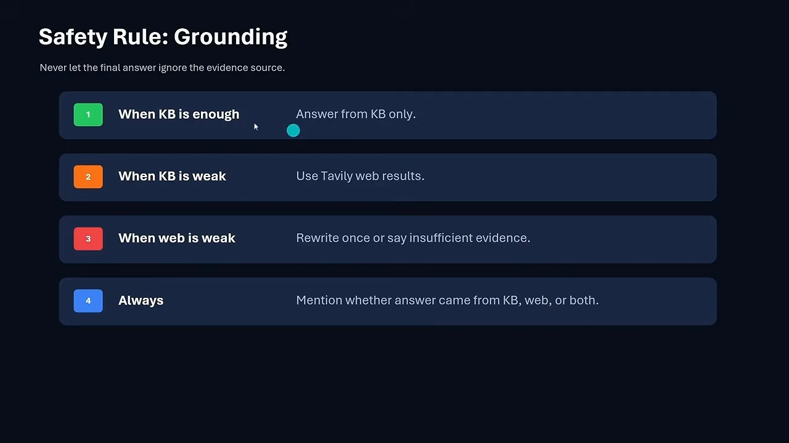
LangGraph에서는 노드끼리 주고받을 값을 상태(state)에 담아요. 슬라이드에는 여섯 칸이 있어요. question(원래 질문), kb_docs(가져온 사내 문서), web_results(Tavily 결과), source_used(kb / web / both / none), retry_count(무한 루프 방지), answer(최종 답)예요.
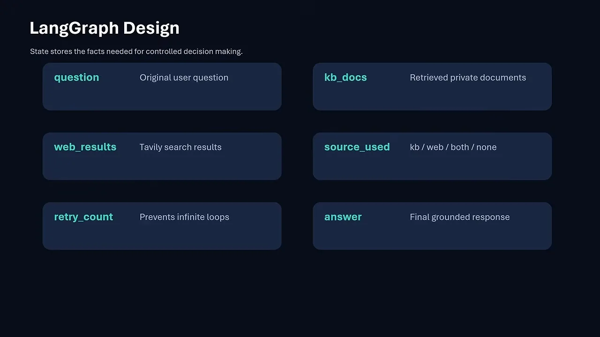
마지막으로 웹 검색 도구로 Tavily를 고른 이유를 네 카드로 보여 줘요. 실시간 검색이라 정보가 바뀌는 질문에 쓸모 있고, 결과가 LLM에 넣기 쉬운 형태로 오고, 사내 지식을 보완하는 대체 출처가 되고, "내부 검색 먼저, 외부 검색 다음"이라는 업계 패턴에 맞는다는 거예요.
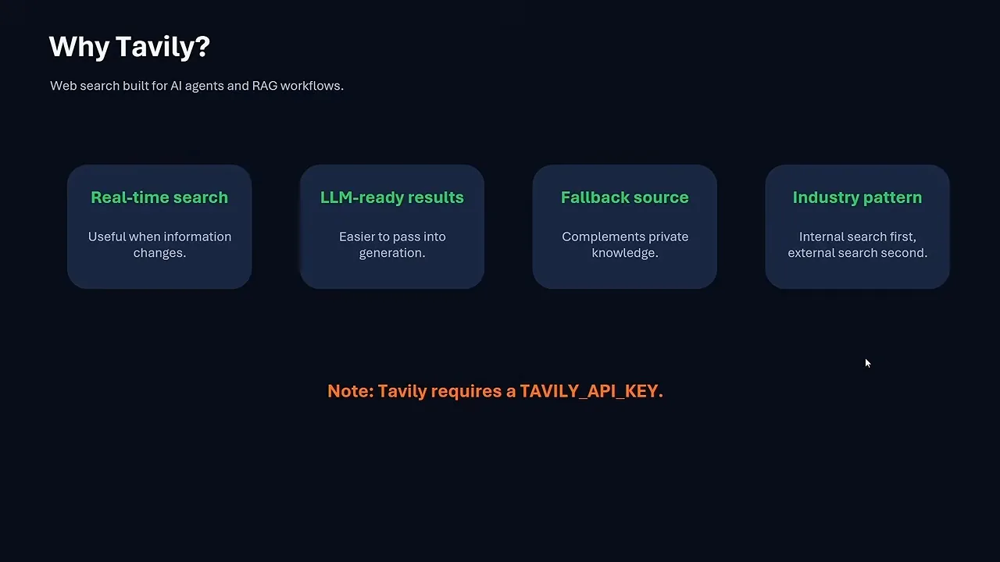
노트북으로 먼저 돌려 보기
제품을 만들기 전에 발표자는 노트북 하나로 에이전틱 RAG 전체를 먼저 돌려 봐요. 이 노트북 코드가 뒤에서 제품 폴더로 거의 그대로 옮겨지니, 이 구간이 사실상 핵심 로직이에요. 노트북 첫 셀의 의존성은 13개예요. langgraph와 langchain, Groq·HuggingFace·Pinecone·Tavily용 langchain 통합 패키지, 조각 나누기용 langchain-text-splitters, 임베딩 모델을 받는 sentence-transformers, 그리고 beautifulsoup4와 python-dotenv예요.
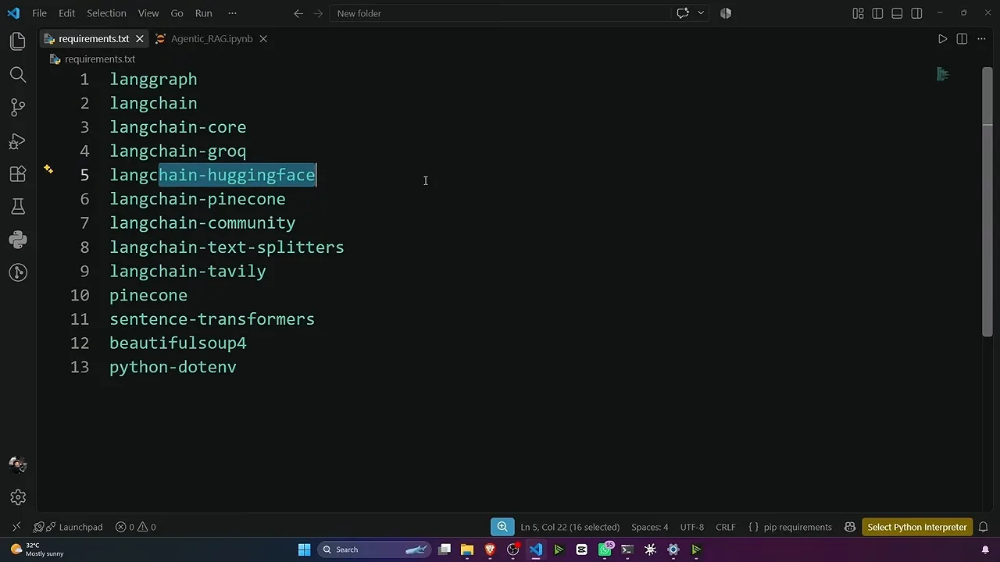
키는 세 개가 필요해요. Groq 콘솔의 API 키, Tavily 키, Pinecone 키예요. 발표자는 Tavily가 매달 1,000크레딧을 무료로 준다고 말해요.
문서 읽기, 조각 나누기, 임베딩
지식 베이스 재료는 LangChain 공식 문서의 에이전틱 RAG 페이지 하나예요. WebBaseLoader에 URL(Uniform Resource Locator)을 주면 페이지 하나가 문서 1개로 읽혀요. 이걸 RecursiveCharacterTextSplitter로 나누니 조각이 28개 나와요. 임베딩은 HuggingFace에 있는 무료 모델 sentence-transformers/all-MiniLM-L6-v2를 내려받아 써요. 셀 아래 출력의 Embedding dimensions: 384가 이 모델이 내는 벡터 길이예요.
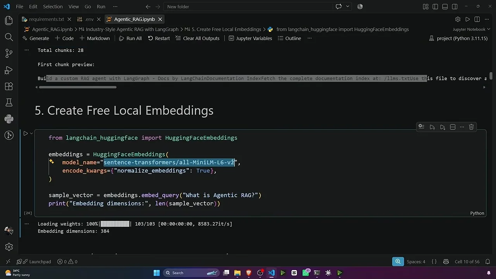
Pinecone 인덱스와 네임스페이스
Pinecone에서는 데이터베이스를 인덱스라고 불러요. 코드는 인덱스 목록을 보고, industry-agentic-rag-kb가 없으면 새로 만들어요. 이때 dimension=384가 임베딩 모델의 출력 차원과 꼭 같아야 해요. 다른 모델이 1024차원을 내면 1024를 넣어야 해요. 가까움을 재는 지표는 코사인 유사도(cosine), 위치는 AWS(Amazon Web Services) us-east-1의 서버리스예요. 그다음 PineconeVectorStore.from_documents가 조각을 벡터로 바꿔 넣어요.
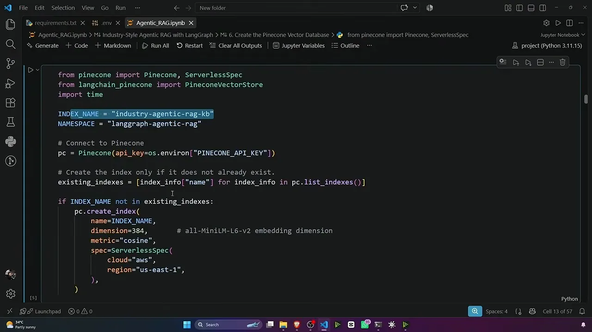
발표자가 Pinecone을 좋아하는 이유는 저장된 벡터를 콘솔에서 바로 볼 수 있어서예요. 레코드 하나를 열면 벡터 값과 함께 메타데이터가 보여요. description, language, source, start_index(원문에서 이 조각이 시작하는 위치), text, title이에요.
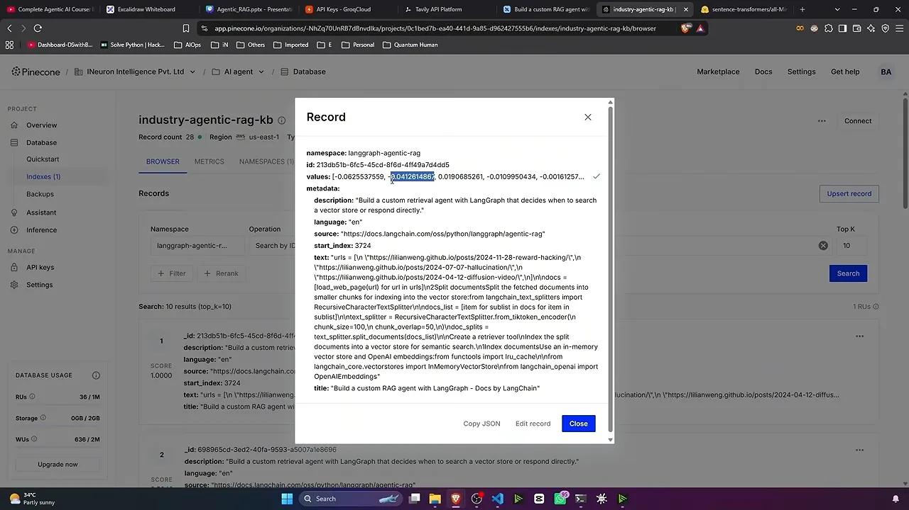
네임스페이스는 인덱스 안의 테이블 같은 칸이라고 설명해요. 같은 인덱스에 부서 A와 부서 B의 지식을 따로 넣고, 검색할 때 어느 칸을 볼지 고를 수 있어요. 리트리버는 as_retriever에 k(돌려줄 조각 수)와 네임스페이스를 넘겨 만들어요. 노트북을 다시 열 때는 다시 넣을 필요 없이 기존 인덱스에 연결만 하면 돼요.
LLM, 웹 검색, 구조화된 결정
LLM은 Groq 플레이그라운드에 있는 openai/gpt-oss-20b를 temperature 0으로 써요. 아래 9번 셀이 Tavily 초기화인데, 설명 문장이 이 설계의 이유를 말해 줘요. Tavily는 사내 지식 베이스가 부족할 때만 쓰고, 모든 사내 질문을 공개 웹으로 보내고 싶지 않아서라는 거예요. 검색 결과는 최대 5개로 받아요.
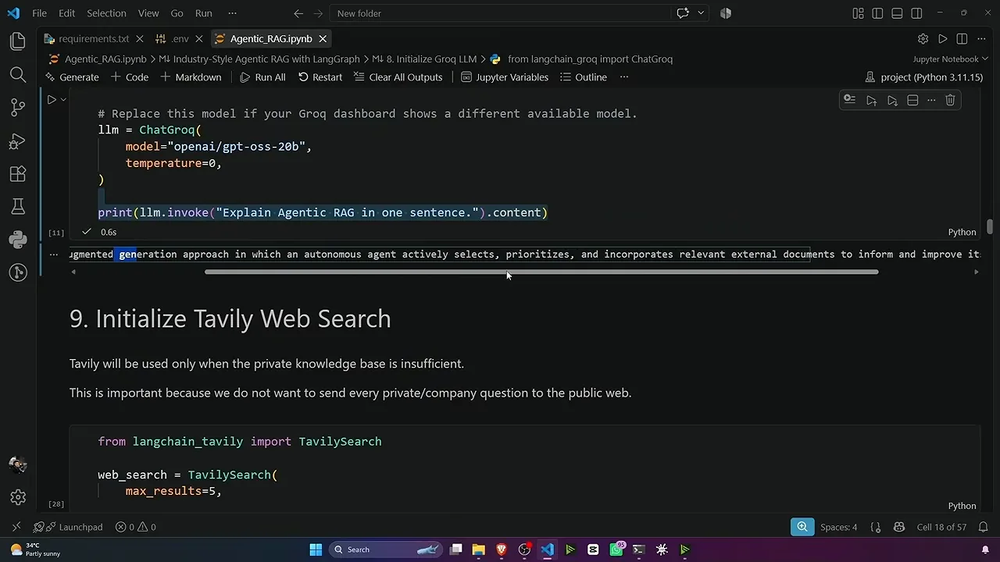
라우팅과 판정은 LLM이 자유롭게 말하면 안 되고 정해진 값 중 하나를 골라야 해요. 그래서 Pydantic 모델 두 개를 만들어요. RouteDecision은 kb 또는 direct, EvidenceGrade는 good 또는 weak만 허용해요. LLM에 with_structured_output으로 이 모델을 붙이면 답이 그 형식으로 와요. 이게 구조화 출력이에요. 같은 EvidenceGrade를 KB 판정과 웹 판정 두 곳에서 다시 써요.
강조 표시된 AgentState가 그래프 전체가 공유하는 상태예요. question 옆의 current_query는 재작성된 질문을 담는 칸이에요. 처음에는 원래 질문과 같다가, 재작성되면 이 값만 바뀌어요.
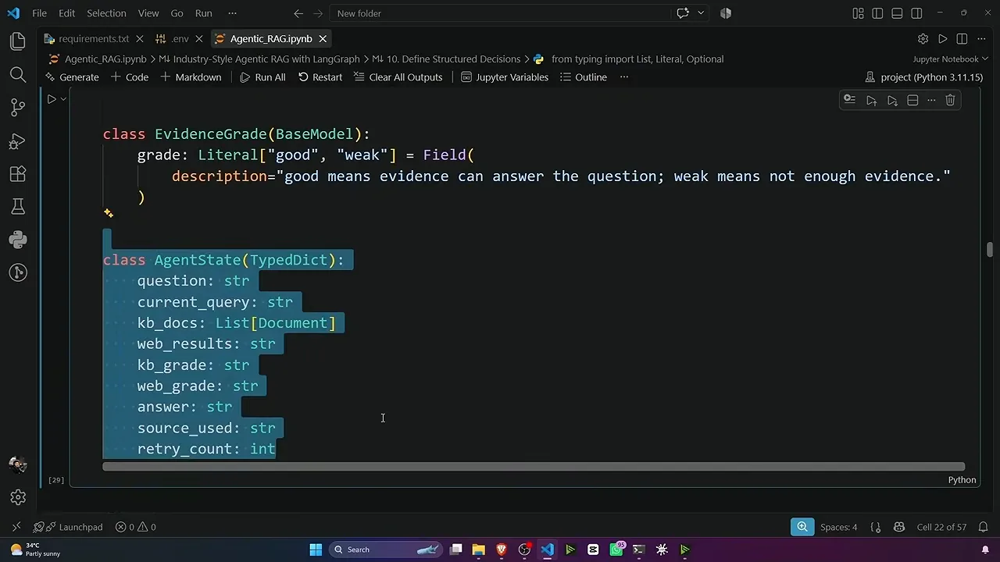
노드 열 개와 재시도 제한
노드는 라우터, KB 검색, KB 판정, Tavily 웹 검색, 웹 판정, 질문 재작성, KB로 답 생성, 웹으로 답 생성, 직접 답, 근거 부족 답의 열 개예요. 판정 노드 뒤에는 다음 노드를 고르는 작은 함수가 붙어요. 화면의 decide_after_web_grade가 그 예예요. 웹 판정이 good이면 웹으로 답하고, 아니면 retry_count가 MAX_RETRIES보다 작을 때만 재작성으로 보내고, 그렇지 않으면 근거 부족 답으로 끝내요.
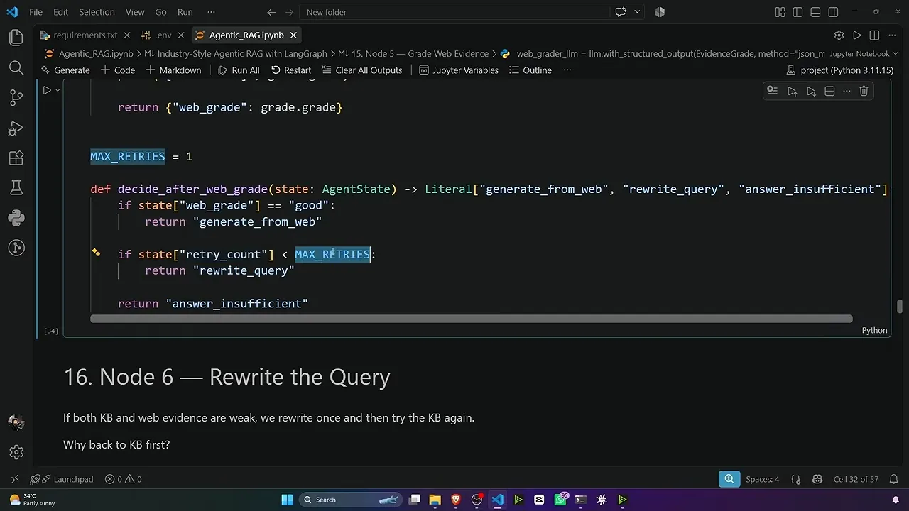
화면 아래 16번 셀 설명을 보면, 재작성한 뒤에는 웹이 아니라 KB 검색부터 다시 시도해요("rewrite once and then try the KB again"). 말로는 "질문을 고쳐 다시 웹을 찾는다"고 설명하지만, 코드에서는 고친 질문으로 KB를 다시 찾고, 그게 또 약하면 웹으로 가는 순서예요. 근거 부족 답은 LLM을 부르지 않고 "사내 지식 베이스나 웹 결과에서 믿을 만한 근거를 충분히 찾지 못했다"는 고정 문장을 돌려줘요.
노드를 모두 StateGraph에 넣고 엣지를 이은 뒤 컴파일하면 그래프 그림을 바로 볼 수 있어요. 위에서 route_question → retrieve_kb → grade_kb_evidence로 내려가고, 거기서 search_web → grade_web_evidence로 갈라져요. 오른쪽으로 다시 retrieve_kb에 올라가는 선이 재작성 뒤 KB로 돌아가는 루프예요.
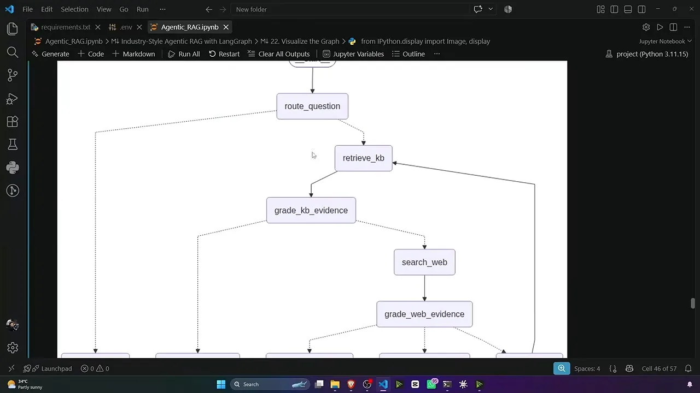
데모 세 가지
첫 데모는 "에이전틱 RAG에서 검색된 문서가 관련 없으면 어떻게 되나요?"예요. 이름은 'KB에서 답하기'였지만 실행 로그는 다르게 흘러요. 라우터는 kb를 고르고 조각 4개를 가져오지만, KB 판정이 weak라서 Tavily로 넘어가고, 웹 판정 good으로 끝나요. SOURCE USED가 web_search로 찍혀요.
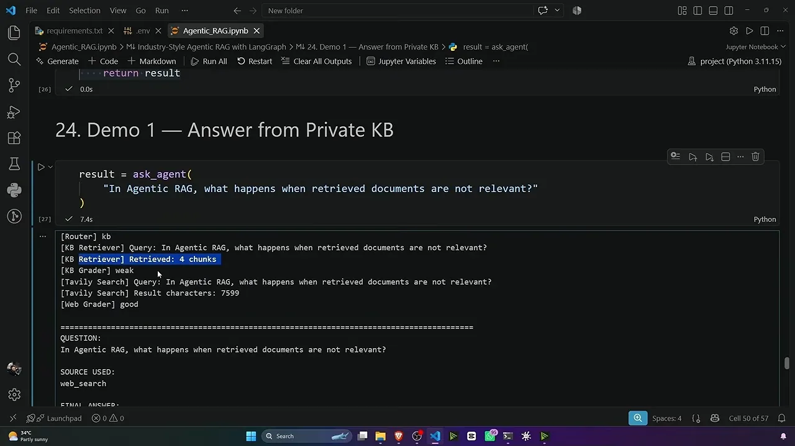
두 번째 데모 "Tavily 검색이 뭐고 왜 AI 에이전트에 유용한가요?"도 KB 판정 weak → 웹 good으로 가서 출처 URL과 함께 답해요. 세 번째 "hello, how are you?"는 라우터가 direct를 골라 검색 없이 바로 답해요. 노트북 끝의 정리는 일곱 가지예요. 사내 KB 우선, 근거 판정, 웹 대체, 질문 재작성, 재시도 제한, 출처 추적, LangGraph 흐름 제어예요.
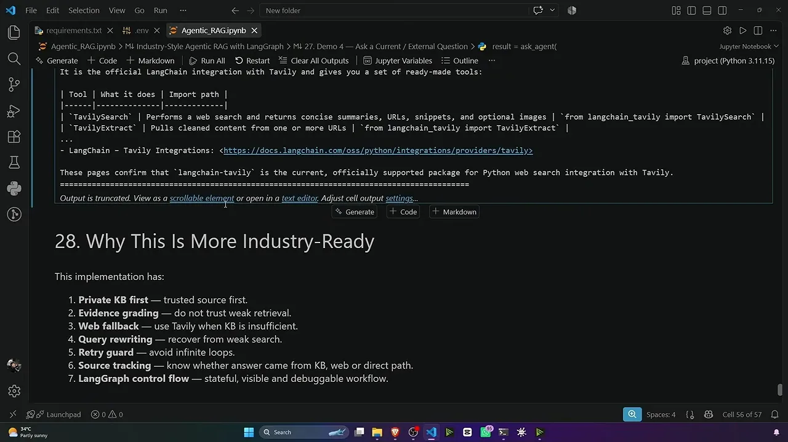
저장소·폴더·설정 갖추기
이제 노트북을 떠나 진짜 제품을 만들어요. 발표자는 회사에서는 코드를 zip으로 주고받지 않고 저장소로 관리한다며 GitHub부터 열어요. 저장소 이름은 Enterprise-IT-Support-Agentic-RAG-Copilot이고, README, Python용 .gitignore, Apache 라이선스를 붙여 만든 뒤 로컬로 내려받아 VS Code로 열어요.
환경은 conda로 만들어요. 명령은 세 줄이에요.
conda create -n project python=3.11 -y
conda activate project
pip install -r requirements.txt제품용 requirements.txt는 노트북과 구성이 달라요. 맨 위 다섯 줄이 웹 서버 쪽이에요. fastapi, 서버를 띄우는 uvicorn, HTML 템플릿을 그리는 jinja2, 파일 업로드에 필요한 python-multipart, 환경 변수를 관리하는 pydantic-settings예요. 그 아래로 langgraph와 langchain 계열, pinecone, openai, 그리고 PDF·DOCX를 읽는 pypdf와 python-docx가 이어져요. 강조된 두 줄(langchain-openai, openai)이 노트북의 Groq·HuggingFace 자리를 대신해요.
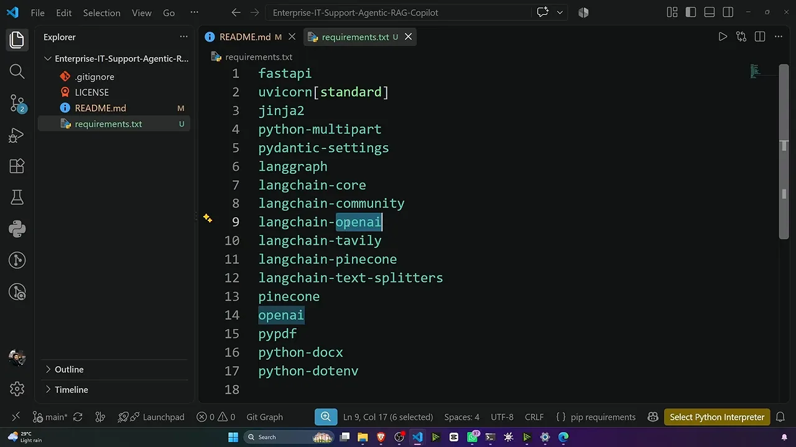
나중에 pip list로 실제 설치된 버전을 확인해 langgraph==1.1.10처럼 모두 고정해요. 라이브러리가 날마다 바뀌니, 몇 달 뒤 다시 실행해도 의존성 오류가 나지 않게 하려는 거예요. README에는 사업 문제, 아키텍처, 워크플로, 폴더 구조, 설치법, 필요한 API 키를 미리 적어 두고 첫 커밋으로 올려요.
폴더 구조를 스크립트로 만들기
폴더 구조는 이렇게 생겼어요. app/ 아래에 api(라우트), core(설정·로깅), rag(벡터 저장소·상태·워크플로), services(문서 수집·감사 로그)와 main.py가 있어요. 루트에는 data, templates, static, uploads, tests와 ingest_sample_kb.py, run.py, .env가 있어요.
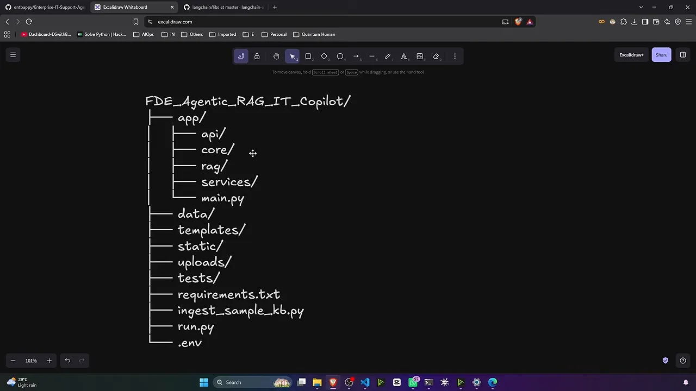
폴더와 파일이 많으면 손으로 만들기 번거로우니 create_project.py를 써요. 폴더 목록과 파일 목록을 파이썬 리스트로 적고, 폴더는 mkdir(parents=True, exist_ok=True), 파일은 touch(exist_ok=True)로 만들어요. exist_ok=True 덕분에 이미 있는 requirements.txt 같은 파일은 건드리지 않아요.
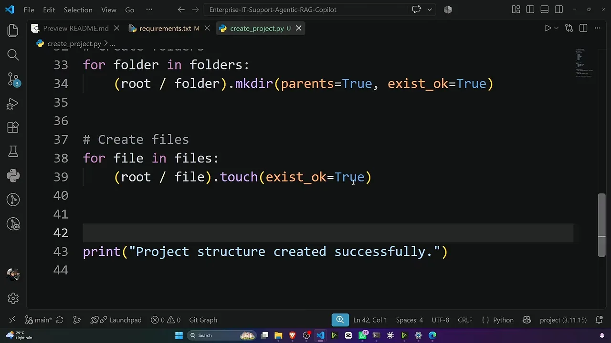
API 키와 환경 변수
.env에는 비밀 키 세 개(OpenAI, Tavily, Pinecone)와 자주 바뀔 수 있는 값을 넣어요. Pinecone 인덱스 이름은 fde-it-support-rag, 네임스페이스는 company-it-kb, 모델은 gpt-4o-mini, 임베딩은 text-embedding-3-small이에요. .env는 .gitignore에 들어 있어 GitHub에 올라가지 않아요. 배포할 때는 클라우드의 환경 변수 화면에 따로 넣어요.
설정 클래스: pydantic-settings와 lru_cache
app/core/config.py가 모든 모듈이 가져다 쓰는 설정이에요. BaseSettings를 상속한 Settings 클래스에 앱 이름, 키, 인덱스·모델 이름과 함께 코드에만 두는 값들을 적어요. 화면 가운데 top_k = 4(검색할 조각 수), max_retries = 1, admin_api_key = "change-me"(문서 업로드용 관리자 키 기본값)가 보이고, 그 아래 감사 DB, 업로드 폴더, 샘플 문서 폴더 경로가 있어요.
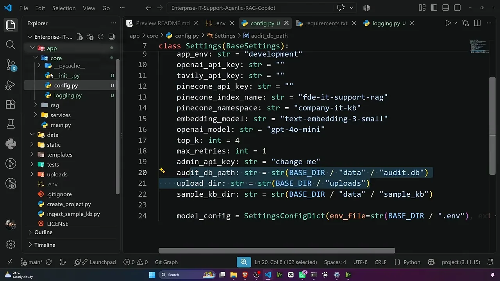
마지막에 @lru_cache를 붙인 get_settings()가 Settings()를 돌려줘요. 발표자는 run.py에서 앱 이름과 OpenAI 키를 출력해 보이며, 클래스에 적지 않은 키도 .env에서 읽혀 들어온다는 걸 확인해요. 같은 폴더의 logging.py에는 시각, 레벨, 파일 이름, 메시지를 남기는 로거 설정을 둬요.
사내 문서를 지식 베이스로
발표자는 진행 순서를 steps.md에 적어 두고 하나씩 지워 가요. 화면의 번호 목록이 제품 전체의 작업 순서예요. 1~3번(requirements, .env, config)은 앞에서 끝냈고, 이 구간은 4~7번이에요. 샘플 문서 넣기, ingestion.py로 문서 읽기와 조각 나누기, vectorstore.py로 OpenAI 임베딩과 Pinecone 연결, ingest_sample_kb.py로 한꺼번에 올리기예요.
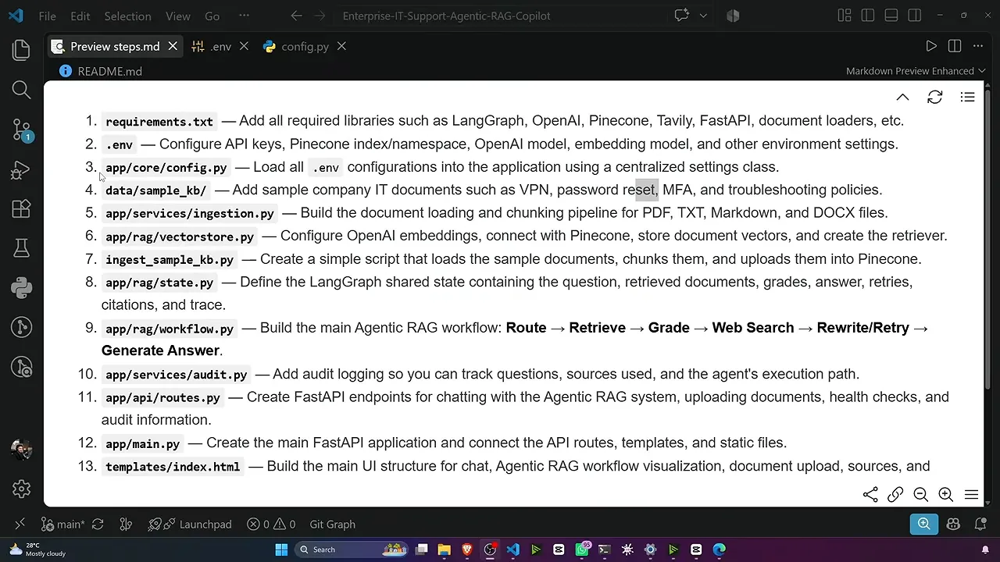
샘플 사내 문서
NovaRetail이 넘겨준 문서라고 가정하고 data/sample_kb에 Markdown 파일 두 개를 만들어요. company_it_handbook.md에는 VPN 접속, 비밀번호 재설정 정책, MFA, 소프트웨어 설치, 분실·도난 노트북 항목이 있어요. service_desk_runbook.md에는 화면처럼 메일 문제 해결, 노트북 성능, 티켓 우선순위가 있어요. 우선순위 항목은 P1(회사 전체 장애나 심각한 보안 사고)부터 P4(일반 요청, 정보 요청)까지 네 단계예요.
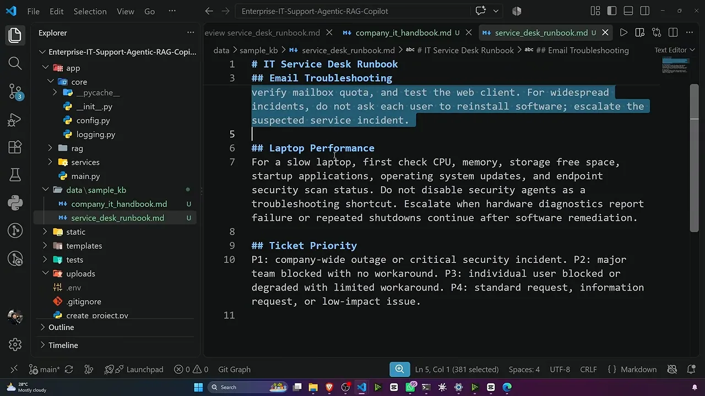
문서 읽기와 조각 나누기: ingestion.py
app/services/ingestion.py의 load_file은 확장자를 보고 로더를 골라요. .pdf는 PyPDFLoader, .txt와 .md는 UTF-8 TextLoader, .docx는 python-docx로 문단을 읽어 줄바꿈으로 이은 뒤 Document 하나로 만들어요. 그 밖의 형식은 "Unsupported file type" 오류를 내요. 지원 형식은 맨 위 SUPPORTED 집합에 모여 있어서, 형식을 늘리려면 여기와 분기 하나만 더하면 돼요.
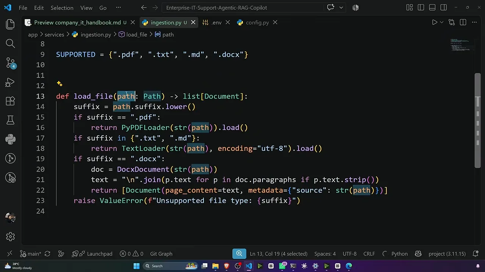
chunk_documents는 노트북과 같은 RecursiveCharacterTextSplitter에 add_start_index를 켜서 조각을 나눠요. 발표자는 run.py에서 핸드북 하나를 읽고 나눠 보는데, 조각이 3개 나와요. 함수 하나를 만들 때마다 이렇게 바로 돌려 보는 게 이 영상의 작업 방식이에요.
임베딩과 Pinecone: vectorstore.py
app/rag/vectorstore.py는 먼저 모델 이름별 벡터 차원표를 둬요. 나중에 임베딩 모델을 바꿔도 Pinecone 인덱스 차원을 손으로 찾지 않게 하려는 거예요.
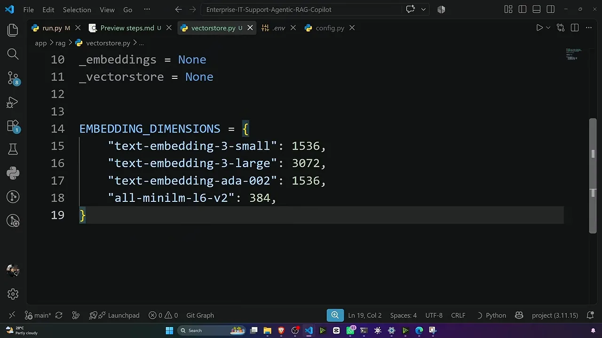
get_embeddings는 OpenAI 키가 없으면 오류를 내고, 있으면 OpenAIEmbeddings 객체를 한 번만 만들어 전역 변수에 담아 재사용해요. ensure_index는 Pinecone 키를 확인하고, 설정된 모델의 차원으로 인덱스를 만들어요. 화면을 보면 발표자가 말로 짚지 않은 부분도 있어요. 이미 있는 인덱스의 차원이 원하는 차원과 다르면 그 인덱스를 지우고(delete_index) 다시 만들어요.
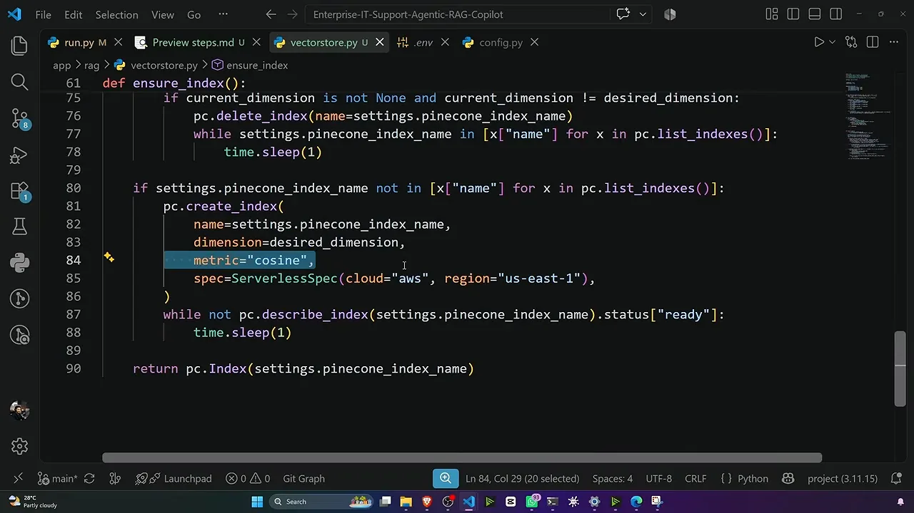
나머지는 세 함수예요. get_vectorstore는 인덱스, 임베딩, 네임스페이스로 PineconeVectorStore를 한 번 만들어 재사용해요. get_retriever는 설정의 top_k(4)만큼 돌려주는 리트리버를 줘요. add_documents는 조각을 받아 기존 인덱스에 더해요. 처음 넣을 때도, 나중에 새 문서를 넣을 때도 이 함수를 써요.
시험 삼아 핸드북 조각 3개를 넣으면 Pinecone 콘솔에 fde-it-support-rag 인덱스가 생기고, company-it-kb 네임스페이스에 레코드가 보여요.
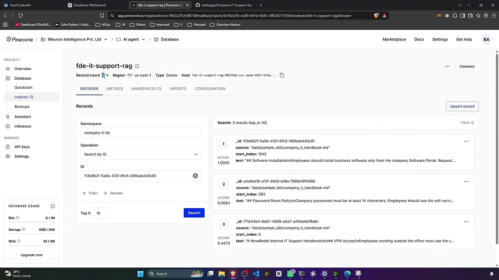
한 번에 올리기: ingest_sample_kb.py
마지막으로 루트의 ingest_sample_kb.py를 써요. 설정의 sample_kb 폴더에서 파일 목록을 만들고, 파일마다 읽기 → 조각 나누기 → add_documents를 돌려요. 테스트용 인덱스를 지우고 이 스크립트를 실행하니 두 파일에서 조각 5개가 올라가요. 발표자는 앱을 실행하기 전에 이 스크립트를 꼭 먼저 돌려 지식 베이스를 만들어 두라고 여러 번 강조해요.
워크플로·감사 로그·API 엮기
이 구간은 노트북 코드를 제품 폴더로 옮기는 일이에요. 발표자는 노트북을 프로젝트 안으로 가져와 두고 거의 그대로 복사해 붙여요. 먼저 app/rag/state.py에 Pydantic 결정 모델 두 개와 상태를 둬요. 노트북과 다른 점은 상태 끝의 두 칸이에요. trace는 실행이 어떤 노드를 거쳤는지 문자열 목록으로 쌓고, citations는 답의 출처를 논문 인용처럼 보여 주려고 넣었어요.
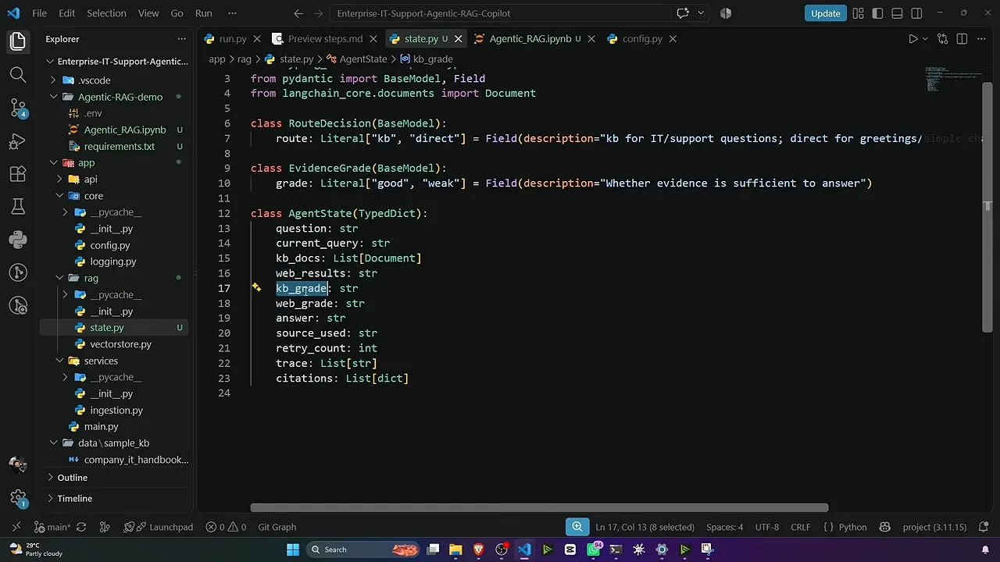
워크플로 그래프: workflow.py
app/rag/workflow.py에는 노드 함수와 build_graph()가 들어가요. LLM은 설정의 OpenAI 모델과 키로, 웹 검색은 Tavily 키와 최대 5개 결과로 한 번만 만들어 재사용해요. add_trace라는 작은 함수가 각 노드에서 실행 기록을 한 줄씩 더해요. 화면이 그래프를 잇는 부분이에요.
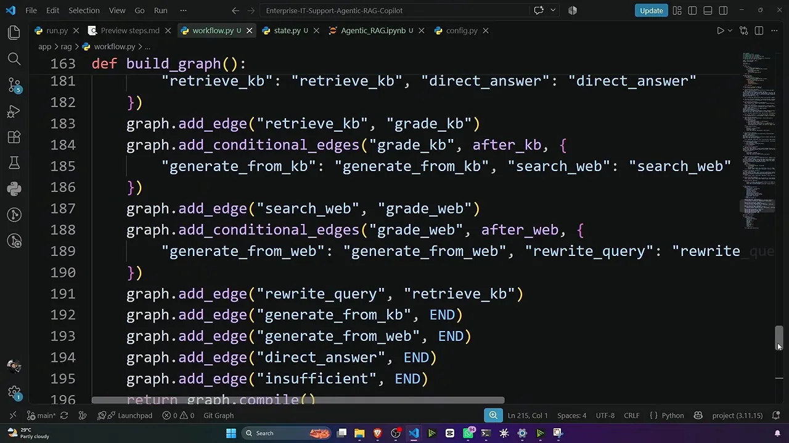
화면의 엣지를 그대로 옮기면 이런 그림이 돼요. 실선은 항상 가는 길, 라벨 붙은 선은 조건부 엣지예요.
flowchart TD
Q["질문"] --> R{"라우터"}
R -- "direct" --> D["direct_answer"]
R -- "kb" --> K["retrieve_kb"]
K --> GK{"grade_kb"}
GK -- "good" --> GFK["generate_from_kb"]
GK -- "weak" --> S["search_web"]
S --> GW{"grade_web"}
GW -- "good" --> GFW["generate_from_web"]
GW -- "weak, 재시도 남음" --> RW["rewrite_query"]
GW -- "weak, 재시도 소진" --> I["insufficient"]
RW --> K
D --> E(["END"])
GFK --> E
GFW --> E
I --> E
그래프 바깥으로 내보내는 건 ask(question) 하나예요. 질문을 받아 그래프를 실행하고 결과 상태를 돌려줘요. API는 이 함수만 알면 돼요.
감사 로그: audit.py
app/services/audit.py는 두 함수예요. init_db는 설정의 경로(data/audit.db)에 SQLite로 연결해 query_audit 테이블을 만들어요. 열은 자동 증가 id, 생성 시각, 질문, 사용한 출처, 실행 경로 JSON(JavaScript Object Notation)이에요. write_audit는 질문 하나가 끝날 때마다 한 줄을 INSERT해요.
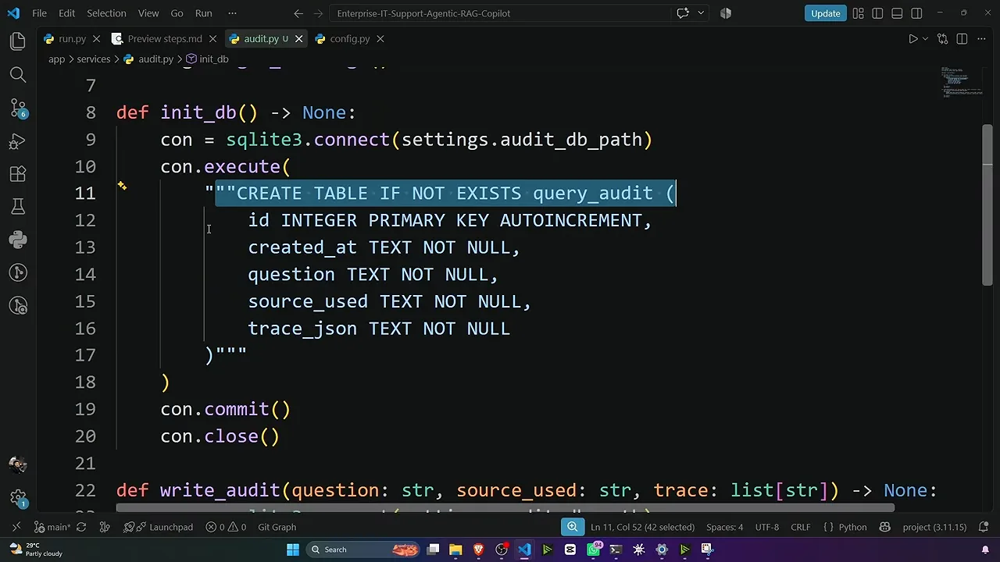
발표자는 누구나 무료로 실행할 수 있게 SQLite와 로컬 업로드 폴더를 골랐다고 해요. 실제 회사에서는 관리형 DB와 S3(Amazon Simple Storage Service) 같은 클라우드 저장소를 쓰라고 권해요.
API 라우트: routes.py
app/api/routes.py는 APIRouter(prefix="/api")로 시작해요. 그래서 아래 세 엔드포인트의 실제 주소는 모두 /api/...예요. 요청 본문은 ChatRequest 하나인데, question을 2자 이상 3,000자 이하로 제한해요.
| 엔드포인트 | 하는 일 | 돌려주는 것 |
|---|---|---|
GET /api/health | 앱이 살아 있는지 확인 | status ok와 서비스 이름 |
POST /api/chat | 질문으로 ask 실행, 감사 로그 기록 | 답, 사용한 출처, 실행 경로 |
POST /api/ingest | 관리자 키 확인 후 파일 업로드·조각·Pinecone 추가 | Document indexed, 파일 이름, 조각 수 |
/chat은 try 안에서 ask를 부르고 write_audit로 질문·출처·trace를 남긴 뒤 결과를 돌려줘요. 오류가 나면 500으로 감싸 올려요. 화면에서는 answer, source_used, trace 세 키가 보이고, 발표자는 citations와 재작성된 질문도 함께 돌려준다고 말해요.
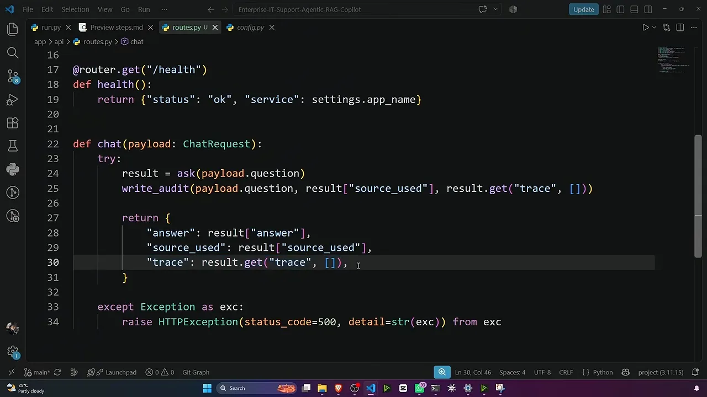
요청 하나가 지나가는 길을 순서대로 그리면 이래요.
sequenceDiagram participant U as 브라우저(app.js) participant A as FastAPI /api/chat participant G as ask() · LangGraph participant P as Pinecone / Tavily participant D as SQLite query_audit U->>A: question A->>G: ask(question) G->>P: 검색 (KB 먼저, 약하면 웹) P-->>G: 조각 / 웹 결과 G-->>A: answer, source_used, trace A->>D: write_audit(질문, 출처, trace) A-->>U: answer, source_used, trace
/ingest는 비동기 함수예요. 업로드를 처리하는 동안 다른 요청을 막지 않으려는 거예요. 먼저 X-Admin-Key 헤더가 설정의 관리자 키와 다르면 401 "Invalid admin key"를 내요. 확장자가 지원 목록에 없으면 400을 내요. 통과하면 파일을 uploads에 쓰고, load_file → chunk_documents → add_documents로 Pinecone에 더한 뒤 조각 수를 알려 줘요.
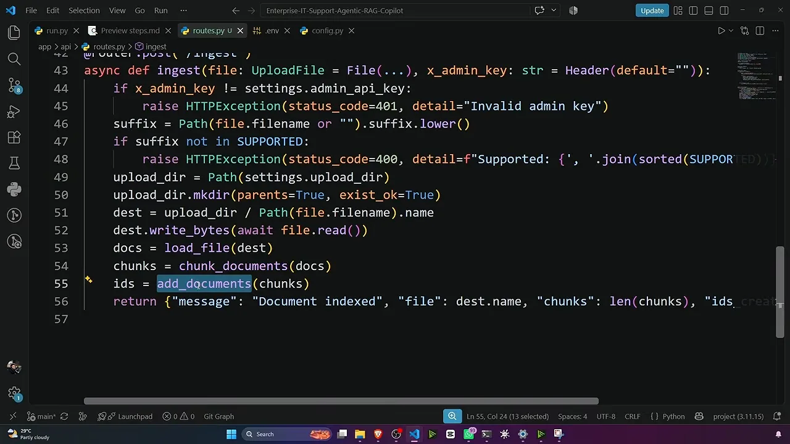
화면을 붙이고 로컬에서 시험하기
화면은 직접 짜지 않아요. 발표자는 워크플로 코드를 ChatGPT에 주고 HTML·CSS·JS를 만들어 달라고 했다고 해요. 회사에서는 프런트엔드 개발자가 따로 맡는 부분이라 기본 화면이면 충분하다는 거예요. FastAPI 관례대로 HTML은 templates/index.html, CSS와 JS는 static/css/style.css와 static/js/app.js에 두고, app.js가 /api/chat과 /api/ingest를 불러요.
app/main.py가 앱의 입구예요. 화면에 보이는 세 줄이 시작할 때 하는 일이에요. 로깅을 설정하고, 설정을 읽고, 감사 DB 테이블을 만들어요. 그다음 FastAPI 객체를 만들고 라우터, 템플릿 폴더, 정적 파일을 연결하고, 첫 화면(/)에서 index.html을 돌려줘요. run.py는 uvicorn으로 app.main:app을 127.0.0.1:8000에 띄워요.
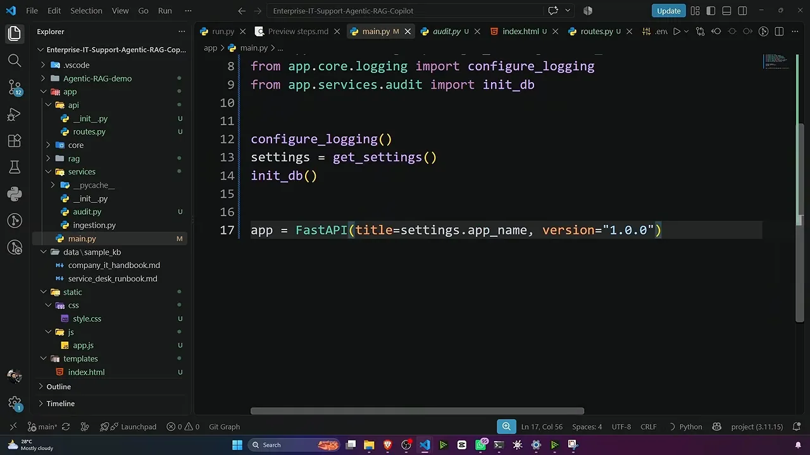
사내 문서로 답하는 경우
화면은 세 칸이에요. 왼쪽에 LangGraph 워크플로 여섯 단계, 가운데 채팅, 오른쪽에 Agent Trace예요. 첫 질문 "How do I connect to the company VPN?"에 답이 오자 오른쪽 trace가 네 줄 쌓여요. Router → KB, Private KB retrieval → 4 chunks, KB evidence grade → GOOD, Answer generation → PRIVATE KB예요. 맨 아래 FINAL SOURCE가 private_kb예요.
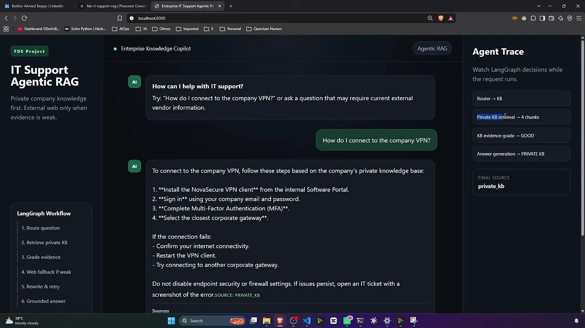
SOURCE: PRIVATE_KB와 아래 Sources 목록이 company_it_handbook.md를 가리켜요. 웹은 한 번도 부르지 않았어요. 영상 3:21:20에서 보기"What is our password reset policy?"도 같은 경로로 가요. 비밀번호는 14자 이상, 재설정은 셀프 서비스 포털, 다섯 번 실패하면 계정이 잠길 수 있다는 핸드북 내용을 그대로 답하고, 출처는 사내 문서예요.
웹으로 넘어가는 경우
"What is the latest Microsoft Teams outage guidance?"는 '최신' 정보라 사내 문서에 없어요. 오른쪽 trace를 보면 KB evidence grade가 weak이고, 그 아래로 Web fallback → Tavily search, Web evidence grade → GOOD, Answer generation → WEB SEARCH가 이어져요. 답에는 Tom's Guide, Cybersecurity News 같은 웹 출처 링크가 붙어요.
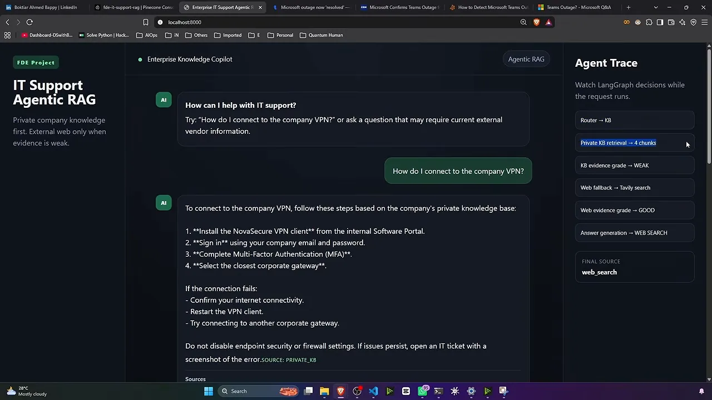
관리자가 새 문서를 올리는 경우
왼쪽 아래 Add Company Document를 누르면 업로드 창이 떠요. 관리자 키(기본값 change-me)를 넣고 NovaCore Technologies의 회사 안내 PDF를 고른 뒤 Index Document를 누르면, 창 아래에 조각 8개로 색인했다는 문구가 떠요. Pinecone 레코드 수는 5개에서 13개가 돼요. 키가 틀리면 올라가지 않아요.
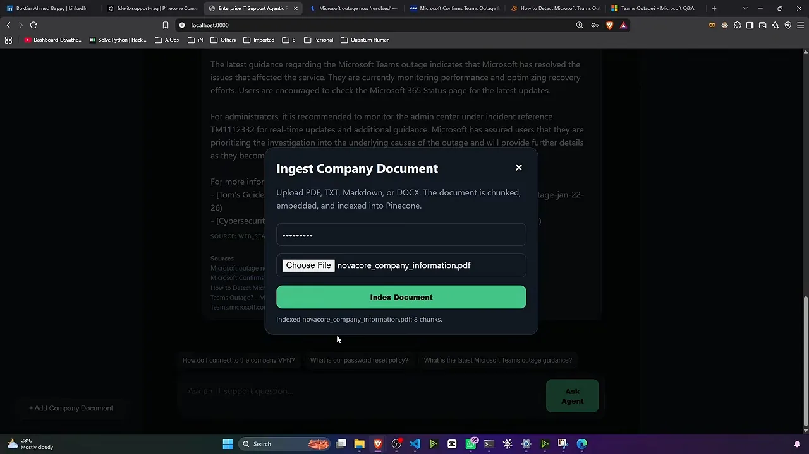
그런데 "What is NovaCore Technologies?"라고 묻자 예상과 다른 일이 생겨요. 라우터가 이 질문을 인사 같은 간단한 질문으로 보고 direct로 보내서, LLM이 문서 없이 일반적인 소개를 지어 답해요. 답 끝의 SOURCE: DIRECT가 그 표시예요. 발표자는 LLM이 이미 아는 정보라 그렇다고 넘어가요.
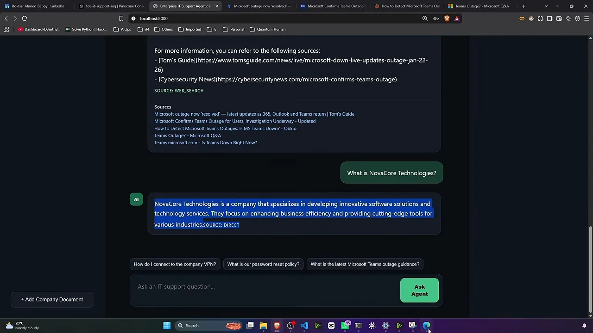
질문을 "NovaCore Technologies Employee Leave Policy"로 바꾸자 이번에는 KB로 가요. 답은 정규직 연 25일 유급 휴가, 7월 1일 이후 입사자는 비례 지급, 최대 5일 이월, 병가 10일, 휴가는 HR(Human Resources) 포털에서 7일 전에 신청이에요. 발표자는 PDF 원문과 대조해 25일이 맞다고 확인해요. 출처는 uploads 폴더의 novacore_company_information.pdf예요.
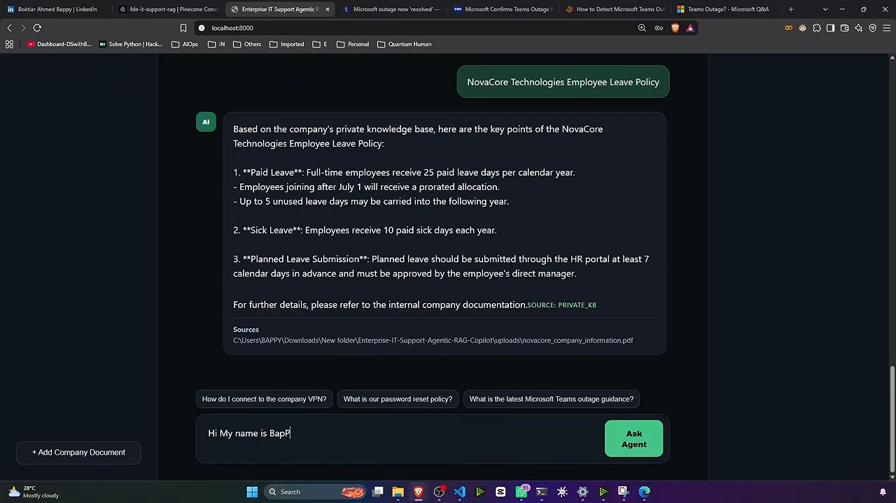
마지막 "Hi my name is Bappy"는 라우터가 direct를 골라 검색 없이 인사로 답해요. 이렇게 KB, 웹, 직접 답 세 경로가 모두 화면에서 확인돼요.
DigitalOcean에 배포하기
로컬에서는 잘 돌지만 localhost 주소는 다른 사람과 나눌 수 없어요. 그래서 마지막으로 DigitalOcean에 올려요. 발표자는 시작 전에 한 번 더 짚어요. 앱이 쓰는 지식 베이스는 ingest_sample_kb.py로 미리 Pinecone에 만들어 둬야 해요. 배포되는 건 앱이고, Pinecone 인덱스는 이미 클라우드에 있으니까요. 그다음 최종 코드를 GitHub main 브랜치에 커밋해요. 배포는 GitHub에서 가져가요.
Dockerfile과 .dockerignore
운영 배포는 보통 Docker로 해요. Dockerfile은 Python 베이스 이미지에서 작업 폴더를 만들고, 환경 변수 세 개(바이트코드 파일 안 쓰기, 출력 버퍼링 끄기, PORT=8080)를 둬요. requirements.txt를 먼저 복사해 설치한 뒤 나머지 코드를 복사하고, 8080 포트를 열고 uvicorn을 띄워요.
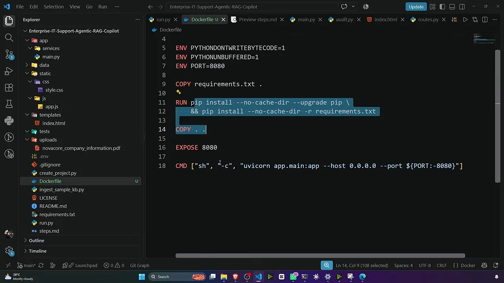
CMD가 ${PORT:-8080}를 쓰는 건 PORT 환경 변수가 있으면 그 값을, 없으면 8080을 쓰겠다는 뜻이에요. 이미지에 넣지 않을 파일은 .dockerignore에 적어요. 화면의 첫 줄이 .env예요. 비밀 키는 이미지에 굽지 않고 DigitalOcean 화면에서 따로 넣어요.
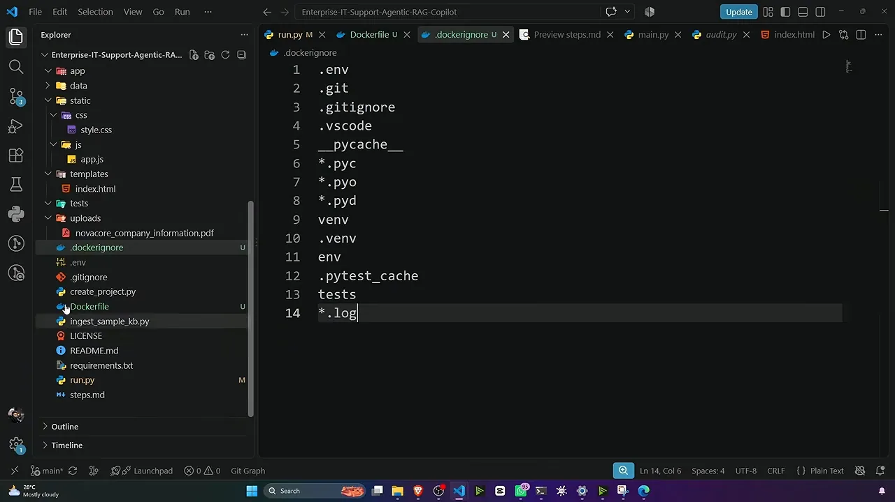
App Platform에 연결하기
DigitalOcean에서 Create → App Platform을 고르고 GitHub 계정을 연결해요. 발표자는 모든 저장소가 아니라 이 프로젝트 저장소에만 권한을 줘요. 화면에서 저장소와 main 브랜치를 고른 뒤, 아래쪽 Autodeploy를 꼭 켜라고 해요. 이 자동 배포가 켜져 있어야 GitHub에 커밋할 때마다 자동으로 다시 배포돼요.
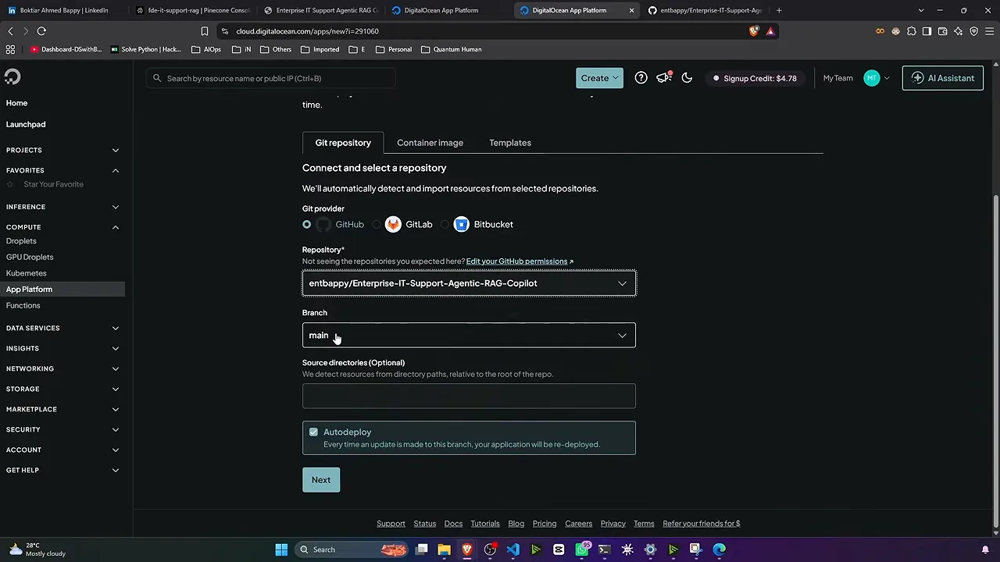
다음 화면에서 크기와 설정을 정해요. 테스트용으로 가장 작은 인스턴스(공유 vCPU 1개, 512MB 메모리, 컨테이너 1개, 월 5달러)를 골라요. 로컬 LLM을 돌리지 않으니 이 정도로 충분하다고 해요. 빌드 방식은 Dockerfile이 자동으로 잡히고, 공개 HTTP(HyperText Transfer Protocol) 포트도 8080으로 잡혀요.
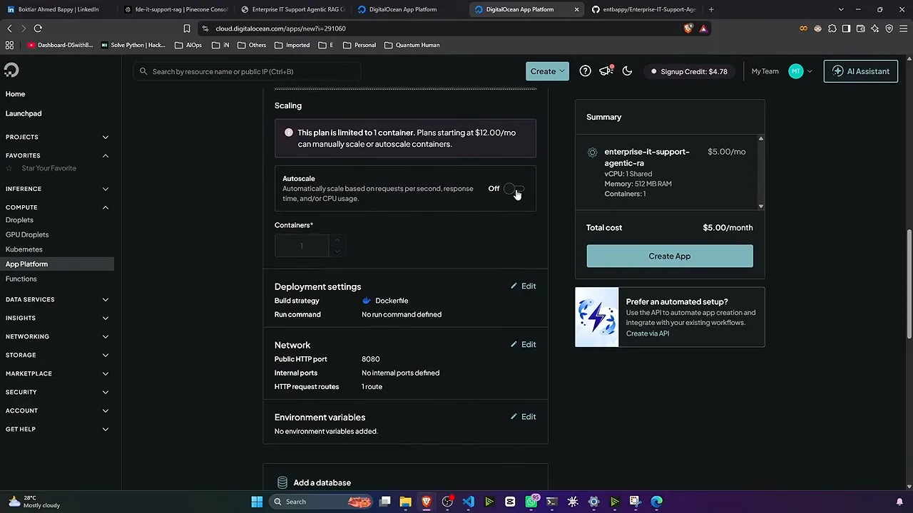
발표자는 운영에서는 오토스케일을 켜라고 권해요. 초당 요청 수, 응답 시간, CPU(Central Processing Unit) 사용량에 따라 컨테이너가 늘고 줄어요. 이어서 환경 변수를 하나씩 넣어요. OpenAI·Tavily·Pinecone 키, 인덱스 이름, 네임스페이스, OpenAI 모델, 임베딩 모델, 관리자 키예요. .env 파일을 통째로 올릴 수도 있어요. Create App을 누르면 Docker 이미지를 빌드해 띄워요.
배포된 앱
빌드가 끝나면 Live App 주소가 생겨요. 주소창이 ondigitalocean.app 도메인으로 바뀌었고, VPN 질문을 다시 던지니 로컬과 같은 답과 같은 trace(Router → KB, 4 chunks, GOOD, PRIVATE KB)가 나와요.
이제 새 기능을 넣고 GitHub에 커밋하기만 하면 앱이 다시 배포돼요. 문제 정의서 한 장에서 시작해 노트북 검증, 모듈 구조, 지식 베이스, API와 화면, 컨테이너 배포까지 가는 것이 발표자가 말하는 FDE 프로젝트의 한 바퀴예요.